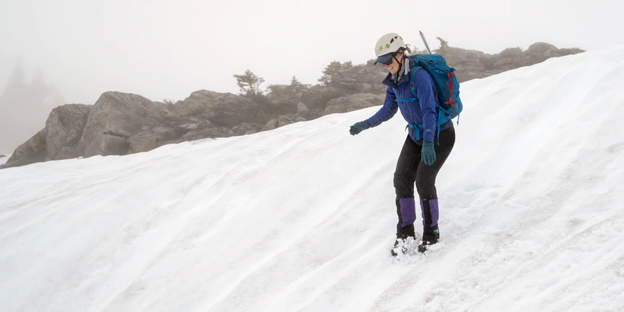

{{history[positionHistory].content}}
{{s.year}}
{{history[positionHistory].year}}
{{history[positionHistory].moment}}
{{history[positionHistory].year}}
{{history[positionHistory].moment}}
{{history[positionHistory].content}}
{{style[positionStyle].infomation}}
{{shelter[positionshelter].content}}
One of the best times to work on your footwork is during your first warm-up climbs. On easy ground you can focus on making each placement perfectly and this will set the standard for the rest of the session. It will also help to reduce the boredom of your warm-up by keeping you mentally challenged. Slow each foot placement down and pause over the hold for a split second while you decide on optimum positioning. Place the foot silently, and without scuffing the wall above the foothold. Try not to re-adjust your feet or to test the footholds excessively. Work on doing this more quickly and intuitively as the warm-up progresses.
The movement pattern for overhangs is entirely different to the movement pattern for vertical walls. The way we learn to climb on slabs and vertical walls is with our hips parallel, as if climbing a ladder, but this causes all sorts of problems on the steep stuff. With your hips parallel, your arms will be forced to pull extra-hard and you will constantly feel out of balance. The answer is to twist into the wall with your hips and straighten your arms. The way to do this is by stepping over the ‘centre line’ and using footholds on the left with the outside edge of your right foot (or vice versa). You can then brace your spare foot against the wall to form a stable tripod. Each reach can then be assisted by the rotational motion of your body, rather than doing it all with the arms. It is a myth that you need strong arms for overhanging walls – if you get this movement sequence right, you may barely need to bend your arms at all.
Good body position is crucial on steep ground as Ian Vickers demonstrates. Photo: David Simmonite
If you are unable to position yourself using your outside edge on an overhanging wall and find yourself off-balance with your hips parallel, then you have two alternatives to correct yourself: first simply to swap feet and get onto the outside edge of your other foot; but swapping feet can feel precarious and you may find that you need to swap them back again as soon as you’ve made the reach. A much slicker option is simply to ‘flag’ your trailing leg into a balance position, to make the reach and then to come out of the flag. You can either do this by bringing the trailing leg behind the active leg (if the foothold is high) or by bringing it inside the active leg (if the foothold is low – see photo). Note that the ‘inside flag’ is a more efficient option as it enables you to twist into the wall.
Speed and timing are the two most important variables for dynamic moves. The faster you pull-up, the more momentum you will be able to capture at the ‘deadpoint’ (this is the split-second weightless moment at the top end of a dyno). Thrust upwards with your legs and hips rather than just pulling with your arms. You must then co-ordinate the upward reach precisely with the dead-point – if you are too slow then all momentum will be lost. Another common mistake is to lose pressure on the footholds at the moment when you move your hand, especially when the footholds are poor. Keep thinking feet as you slap and keep your body taught to take the strain. On steep walls you must ‘pull’ with your feet rather than pushing. Curved ‘toe-down’ shoes help you to use your foot like a claw. If you are having difficulty sticking the target hold then try ‘cheating’ into position and hanging it, to gain confidence and learn the position. Your hips should finish vertically below the hold to minimize outward swing. If you really are a ‘static’ climber then try double-handed dynos on a gently overhanging wall with your feet on good footholds to teach yourself the timing sequence.
It's always best to avoid cutting loose on overhangs but sometimes you have no choice. The secret is to take one leg off before the other to reduce the severity of the swing. Arch your back as you swing, bend one of your legs up behind you and keep the other in front. Tense your back muscles as hard as you can to kill the swing. Try to use the momentum on the reverse side of the swing to help you lift your feet back up. Aim to re-locate them first time, because another attempt will seriously drain your energy.
Volumes are an important new addition to modern climbing walls, but many climbers find their first encounter to be a pretty intimidating affair. Volumes can make the wall feel so much steeper and they are often covered in nasty screw-ons or slopers. But they can be tamed with the following tips: Step well back first to look for hidden holds over the top, peer round the sides for side-pulls and underneath to check for under-cuts. Look for chalk-lines or ‘tick-marks’, but if these aren’t evident then take a reference point so that you can locate the hold from below when it is out of site. When planning your moves, think 3-dimensionally and consider palming and bridging. Only hang the flat sloping face of a volume as an absolute last resort, and instead consider cupping the side, pinching them or crimping a screw-on and pinching the bottom (see photo). Where two volumes appear close to each other it may also be possible to jam or knee-bar between them. Avoid getting stretched out as you move up onto a volume and use heel-hooks and toe-hooks to prevent you from swinging off. Where possible, try to get bunched on top and use the easier angled face to fashion a rest.

Of course it helps to have a vice-like grip to use slopers but technique also plays a huge part. If possible, test the surface of the hold first to feel for the best part. Aim for maximum contact and ‘smear’ your hand into position. The thumb is crucial - try pinching the side or underneath or put three fingers on top and pinch with your little finger on one side. Use the crimp or half-crimp grip if the depth of the sloper is less than your second finger joint, or if it has a slightly in-cut or indented section. Try to keep your wrist as stiff as possible. Keep your centre-of-gravity vertically below the hold in both planes. If you reach for a sloper out to the side then steer your hips towards it before you try to weight it. Always stay as low as possible to the hold. It is usually a bad idea to use two footholds at a similar height, as this will force you too high and out of balance. Instead, take one foot off and flag the spare leg to counterbalance. Keep your body taut and be smooth and stealthy with your movements. And above all else – keep trying. You’ll never master slopers unless you get involved. Happy slapping!
It’s hard to overstate the importance of good technique. When you focus on technique, moves start to click into place and you find yourself floating up routes that used to be too difficult. This section covers some key concepts:
Feet are the foundation of climbing. Lots of beginners try to pull
themselves up the wall and quickly tire out. Think about climbing a
ladder—you don’t pull yourself up, you step up, and use your arms
and hands for balance. It’s the same in climbing.
Basic
techniques for using your feet are edging and smearing:
When you smear, look for small depressions or protrusions that will give a little extra friction. You can also flatten out the angle for slightly better purchase.
Keep the following footwork tactics in mind when climbing:When you’re lucky enough to have a line of jugs leading straight up the wall, climbing is pretty intuitive. When you’re on a route where you have to move and pull in different directions, though, you have to use your body to maintain balance.
When you have to use a hold that’s out to the side, you can’t pull straight down. So you need to find a way to counter the force of that side pull, so you don’t lose balance and barn-door off the wall.
Balancing tactics:
Learn how to use less energy and how to give your muscles a break as you climb:
Ascending snow without crampons requires step-kicking—where you use your boot to slice into the snow, creating a level platform to remain in balance. Step-kicking can be done three ways. Which method you use depends on the angle of the slope and the conditions of the snow. You’ll adapt your footwork as the terrain, your comfort level and balance change. When you start to get out of balance, consider switching to a different footwork technique.
Take turns: In firmer, deeper or unconsolidated snow (where your foot can sink in), kicking steps can become more exhausting. In such cases, it’s a good idea to take turns kicking steps, or breaking trail, with others in your group. The person in the lead kicks steps up a slope and the followers walk in those same steps, helping to improve the platform for others who follow. Switch out leaders so everyone shares the load. Also consider the location where you plan to alternate whomever is in front, making sure you’re not in a spot where you’re exposed to overhead dangers or fall hazards.
This technique is the foundation of ascending on low-angle, softer snow. You’ll adjust how you kick steps when the slope angle and snow consistency changes.
As the terrain gets steeper or your level of comfort decreases using the duck walk position, transition to the crossover technique to move more securely and stay in balance.
The rest step is essential for conserving energy when you’re climbing or hiking uphill. This technique gets you into a steady rhythm which will help you climb more efficiently and help prevent your muscles from becoming fatigued. With each step, you momentarily rest between strides as you shift your weight onto the skeleton of your back leg.
Here’s how to rest step:
Tip: Take small steps.
Many mountaineering accidents occur on the descent when you’re likely to be more exhausted. Learn different ways to get down a snow slope more safely and efficiently.
The plunge step is a useful technique to keep you in balance and help you descend quickly. In this technique:
Glissading is a fast and exciting way to get down a mountain. There are several rules of glissading, whether you’re standing or sitting:
If you’re glissading, you need to know what’s below you and be able to see the runout. If you can’t see what’s below you, then it’s a bad idea to glissade. Always be prepared to self-arrest if you lose control.
Glissading while seated is easy to do. You’re essentially sliding downhill on your butt while using your ice axe to stay in control.
Tips for a seated glissade:

Boot skiing, also known as a standing glissade, can be a fast, efficient (and drier) way to get down the mountain. You’re basically downhill skiing using the soles of your boots (rather than skis) to glide. This takes more practice than the seated glissade but keeps you drier.
Tips for a standing glissade: